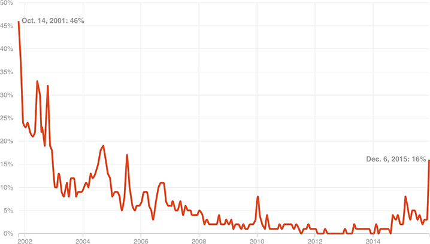

Americans See Terrorism As A Growing Threat
The share of people who see terrorism as the most important problem in the U.S. is still well below post-9/11 levels. However, it spiked at the end of 2015, after the Paris and San Bernardino attacks. As of December, 16 percent of Americans saw terrorism as the most important problem.
